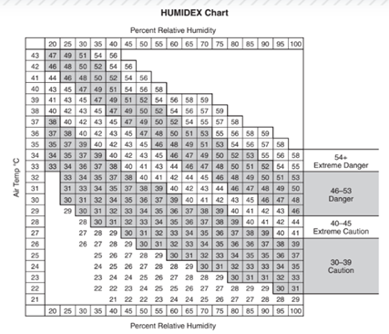
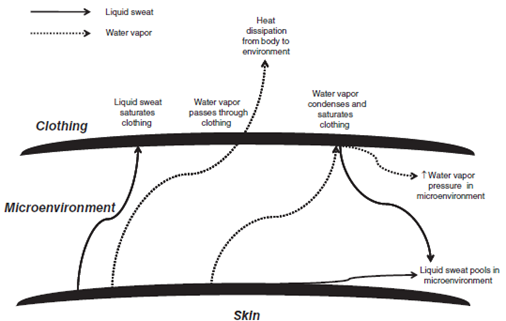
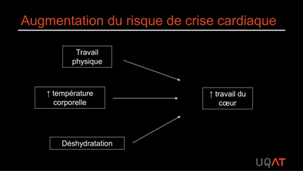
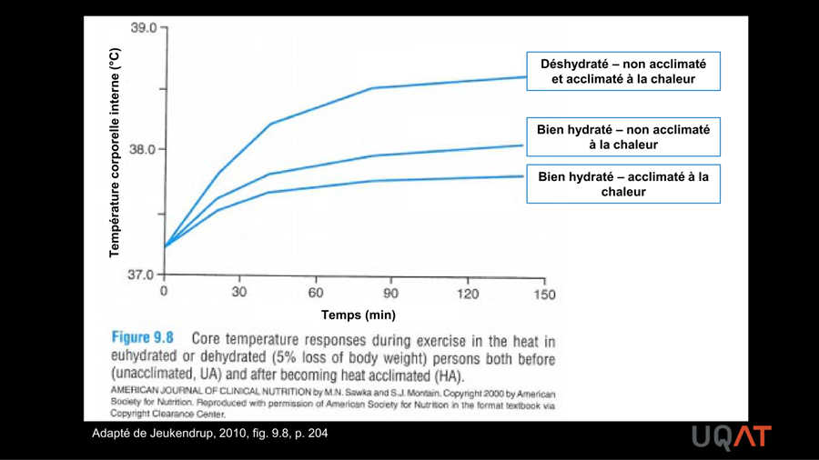
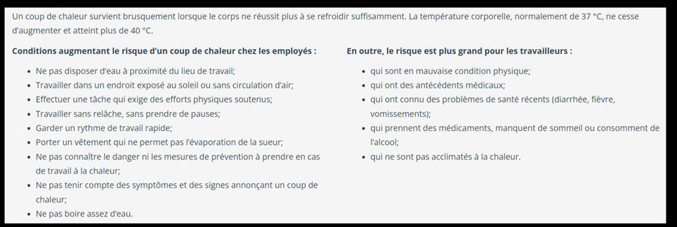
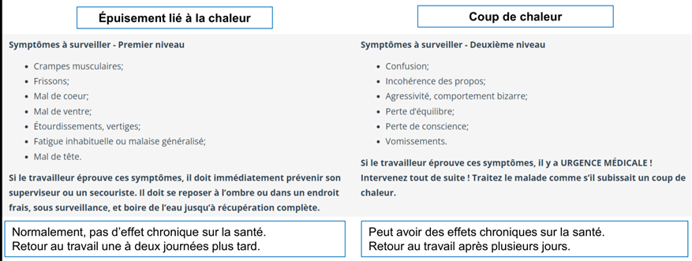
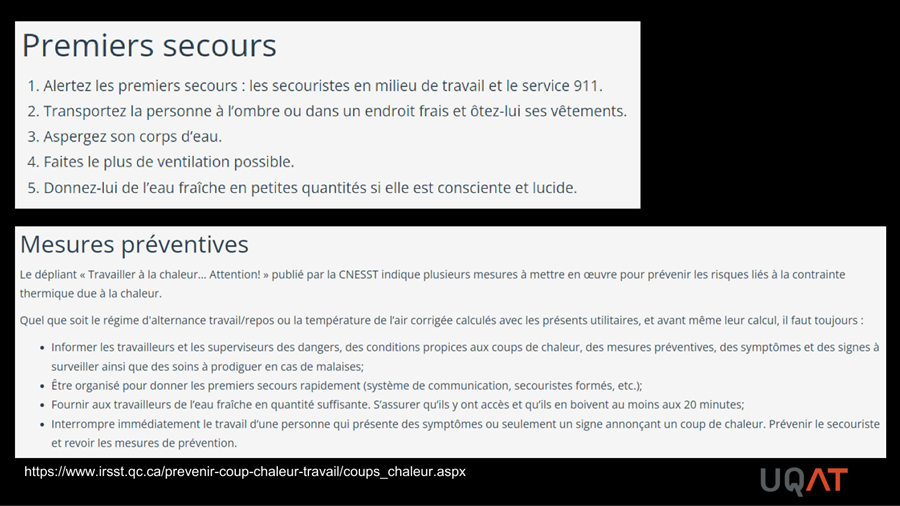
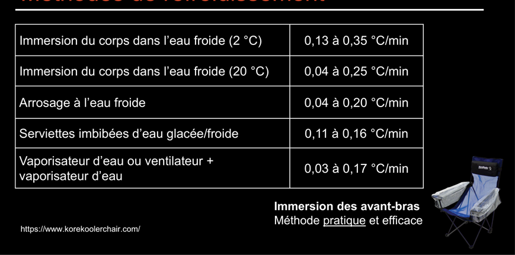
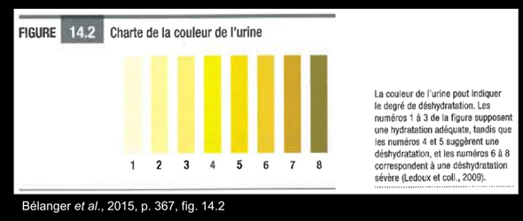

Travail en environnement chaud
L'humain maintient une température corporelle interne d'environ 37 °C par homéothermie. Le travail en environnement chaud peut excéder les capacités de dissipation, causant déshydratation, épuisement et coup de chaleur. L'industrie minière est l'une des plus touchées, particulièrement en profondeur où la chaleur géothermique s'ajoute à la chaleur métabolique. L'INSPQ projette une hausse de 73 à 139 % des problèmes liés à la chaleur en milieu de travail d'ici 2050.
Table des matières
- Régulation thermique humaine
- Échanges de chaleur
- Mesure de la contrainte thermique
- Risques pour la santé
- Hydratation
- Prévention
- Acclimatation
- Application terrain
- Ressources
Régulation thermique humaine
Homéothermie : capacité à maintenir la température corporelle interne constante malgré les variations externes. Le comportement humain participe (vêtements, ombre, boissons).
Température corporelle interne normale au repos : 36,5 à 37,5 °C (peut descendre à 36 °C le matin, monter à 40 °C à l'effort).
Production de chaleur métabolique
- 20 à 25 % de l'énergie (ATP) produite par l'organisme sert aux fonctions physiologiques (contraction musculaire).
- Le reste se transforme en chaleur.
- Exemple : 100 kcal dépensées pour monter un escalier = environ 20 kcal de contraction musculaire et 80 kcal de chaleur.
Bilan thermique
Gain > perte = ↑ température corporelle.
L'effort physique augmente la production de chaleur. La capacité à maintenir la température corporelle dépend de la capacité à dissiper cette production.
Échanges de chaleur
Quatre voies physiques.
| Voie | Mécanisme | Repos | Effort |
|---|---|---|---|
| Conduction (K) | Contact moléculaire direct | 3 % | Négligeable |
| Convection (C) | Mouvement d'air ou d'eau | Modéré | Selon ventilation |
| Radiation (R) | Émission infrarouge | 60 % | Moindre si chaud |
| Évaporation (E) | Sudation et respiration | 25 % | 80 % |
Convection
Plus le mouvement du gaz ou du liquide est grand, plus les échanges sont importants. Dans l'eau plus froide que la peau, les pertes sont environ 26 fois plus importantes que dans l'air à même température.
Radiation
- Tout corps émet un rayonnement (principalement infrarouge).
- Si les corps autour sont plus chauds, la radiation est entrante (gain).
- Le soleil est la plus grande source de radiation.
- La peau humaine absorbe environ 97 % du rayonnement reçu.
- Les vêtements foncés absorbent plus que les clairs.
Échanges de chaleur sèche (K, C, R) : n'aident à perdre que si l'environnement est plus froid que la peau.
Évaporation
- Moyen privilégié en environnement chaud (80 % à l'effort).
- Sudation et respiration.
- Pertes insensibles : 10 à 20 % de la chaleur métabolique.
- Seule la sueur évaporée a un effet thermorégulateur.
- Mineurs/mineuses : 0,3 à 1,5 L / heure.
L'humidité (hygrométrie) limite l'évaporation. Quand le taux d'humidité est élevé, le gradient de concentration en vapeur d'eau est faible, l'évaporation sudorale et la perte de chaleur diminuent.
{kind=link}

Toucher l'image pour l'agrandirMesure de la contrainte thermique
La température de l'air seule est insuffisante. Quatre paramètres influencent le stress thermique
- Température de l'air.
- Degré hygrométrique (humidité).
- Vitesse du vent.
- Quantité totale de radiation.
Indice WBGT (Wet Bulb Globe Temperature)
Température au thermomètre à globe humide
$$WBGT = 0{,}1 \cdot TBS + 0{,}7 \cdot TBH + 0{,}2 \cdot TGN$$
Où TBS = température sèche, TBH = température au thermomètre humide, TGN = température au globe noir.
C'est l'indice de référence en hygiène industrielle. Voir aussi Prévention de la contrainte thermique en mine dans le wiki frère.
Vêtements de protection
Les vêtements de protection (pompiers, manutention de matières dangereuses, militaires, débroussaillage)
- ↑ coût métabolique d'un effort donné (poids, restriction des mouvements) → ↑ production de chaleur.
- Limitent la dissipation : microenvironnement humide entre peau et vêtement → ↑ accumulation de chaleur.
{kind=link}

Toucher l'image pour l'agrandirRisques pour la santé
Statistiques
Selon l'INSPQ (2001-2016) : chaque augmentation de 1 °C de la température maximale quotidienne était associée à une ↑ de 34 % des problèmes de santé liés à la chaleur durant les 5 mois les plus chauds. Les industries de la construction, de l'agriculture et de l'extraction minière étaient les plus affectées.
Projections d'ici 2050 : ↑ de 73-95 % (scénario optimiste) à 110-139 % (scénario pessimiste) des problèmes liés à la chaleur.
Atteintes
Blessures musculosquelettiques : risque accru de blessures traumatiques attribué à des erreurs de jugement et d'inattention dues à la fatigue cognitive et physique.
Augmentation du risque de crise cardiaque.
{kind=link}

Toucher l'image pour l'agrandir{kind=link}

Toucher l'image pour l'agrandirProblèmes liés à la chaleur
- Épuisement lié à la chaleur (fatigue, faiblesse, étourdissement, transpiration profuse).
- Coup de chaleur : urgence médicale (température corporelle élevée, absence de transpiration ou transpiration confuse, atteinte neurologique).
{kind=link}

Toucher l'image pour l'agrandir{kind=link}

Toucher l'image pour l'agrandir{kind=link}

Toucher l'image pour l'agrandirMéthodes de refroidissement d'urgence : immersion en eau froide reste la référence.
{kind=link}

Toucher l'image pour l'agrandirHydratation
Indicateurs du niveau d'hydratation
- Perception de la soif.
- Couleur de l'urine.
- Perte de masse corporelle.
{kind=link}

Toucher l'image pour l'agrandirDéshydratation/hypohydratation : moins bonne capacité à produire de la sueur → ↑ température corporelle interne.
Prévention
Stratégies de prévention
- Acclimatation à la chaleur.
- Hydratation adéquate (pré-, per-, post-travail).
- Vêtements légers et de couleur claire (si possible).
- Travailler le matin ou le soir (si possible).
- Ne pas se fier seulement à la température de l'air.
- Connaître les signes et symptômes de problèmes de santé liés à la chaleur.
- Alternance travail / repos selon le RSST.
- Éviter d'être trop exposé à la chaleur avant la journée.
Acclimatation
Le corps humain s'adapte très bien à la chaleur en quelques jours.
- ↓ température corporelle interne de repos.
- ↑ capacité de sudation.
- Autres adaptations physiologiques (volume plasmatique, sensibilité de la régulation).
Protocole d'acclimatation typique : exposition progressive 1 h à 2 h le premier jour, puis augmentation progressive sur 7 à 14 jours.
Application terrain
Sources de chaleur en mine
Souterrain
- Géothermie : la température augmente avec la profondeur (gradient géothermique typique 1 °C par 30 à 100 m).
- Machinerie diesel (chaleur d'échappement, moteurs).
- Roche chaude après sautage.
- Faible ventilation dans certains chantiers.
Surface
- Soleil direct (camions de fosse, opérations à ciel ouvert).
- Concentrateur (procédés thermiques).
- Fonderie (très haute température).
Postes à risque en mine
| Poste | Sources de chaleur |
|---|---|
| Foreur, profil RPS et leadership de chantier en profondeur | Géothermie, effort physique, ventilation limitée |
| Boutefeu après sautage | Roche chaude, gaz résiduels |
| Mécanicien sous machinerie chaude | Conduction, radiation |
| Opérateur de fonderie | Très haute température, radiation intense |
| Travailleur à ciel ouvert l'été | Soleil, radiation, surfaces réfléchissantes |
Leviers en mine
- Système de ventilation et de réfrigération souterraine (ventilation forcée, refroidisseurs).
- Acclimatation systématique pour nouveaux travailleurs et après absence prolongée.
- Programme d'hydratation : eau accessible à tous les chantiers, électrolytes en cas de sudation prolongée.
- Surveillance médicale (médecin du travail) pour postes très exposés (fonderie).
- Alternance travail-repos selon le RSST (calculs basés sur WBGT).
- Vêtements de travail clairs et respirants.
- Pauses dans des aires fraîches identifiées.
- Communication des températures attendues en début de quart.
Voir aussi Prévention de la contrainte thermique en mine (wiki Hygiène frère) pour le calcul détaillé de l'alternance travail-repos.
Ressources
| Document | Type | Source |
|---|---|---|
| Cours SST 1162 - S8 - Travail en environnement chaud | Cours | UQAT |
| Guide IRSST sur les coups de chaleur | Guide | IRSST |
| Norme ACGIH (TLV chaleur) | Norme | ACGIH |
| Rapport INSPQ sur chaleur et changements climatiques | Rapport | INSPQ |
Articles wiki connexes
Pages qui pointent ici (6)
- 🏠 Wiki Ergonomie, mines Ergonomie
- 🚀 Démarrage rapide - Superviseur, contremaître Ergonomie
- Contraintes Ergonomie
- Domaines de l'ergonomie Ergonomie
- Politique d'hydratation et de chaleur Ergonomie
- Système musculaire Ergonomie